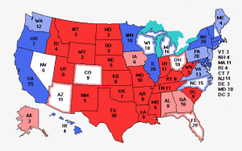
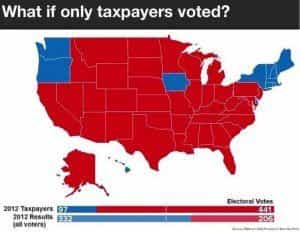
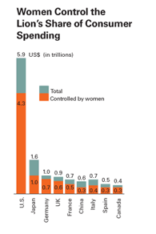

< < < Back
Changing Demographic Tide Will Favor Democratic Party For Decades To Come – Return Of Kings
Don’t let the media fool you when they tell you Trump is up 5 to 7 points in the popular vote. Trump is still behind in many polls of the electoral college despite having such a commanding lead in the popular vote. Why? Waves of immigrants are changing the destiny of the United States forever. The Democratic party will be heavily favored in the 2016 election in the electoral college, and the math only gets worse in future presidential elections.
Look for states to increasingly swing to blue and stay that way.
All Return Of Kings readers should be concerned in 2016, and especially beyond. Democrats could have a virtual lock on the Presidency very soon, as white people scratch their heads and wonder why their voice no longer counts in elections. Demographic changes intended to dispossess whites from their homeland—a country in which they were 92% of the electorate in 1960, but will be 43% in a few short decades with their offspring representing only 38% of children under 5—means emboldened Democrats will likely move even farther to the left towards Communism as they have a lock on the Senate and House as well.
Despite Hillary’s criminality and investigation by the FBI, despite the low turnout at her rallies, despite her image as a crook and a liar, despite her health issues, despite Trump being up in the popular vote—Hillary was still winning in the electoral college as of Sunday, September 18, though just barely. She had 274 electoral votes to Trump’s 258 in this map from Electoral Vote, with Nevada and its 6 electoral votes up for grabs. 270 votes are needed to win the presidency.

270 to win: Hillary still has the edge thanks to demographic changes brought on by globalists
How is this possible? How can such a damaged goods candidate even be competitive, let alone WINNING in the electoral college? Call it the devious plans of globalists coming to fruition. Globalists have been flooding the country with immigrants for decades, and now the country is about to make a permanent electoral swing towards Communism.
Today’s mostly non-white immigrants (i.e. reliable Democrat cannon fodder) tend to congregate in the largest cities of the country. States with the most electoral votes have a lot of electoral sway simply because they have the largest cities where all the immigrants – legal and illegal – happen to be. Even deep red Texas will swing permanently blue in the coming decades as Anglo whites only make up 25% of the population under age 5. (Whites thinking they don’t have to have dirty little babies and families is catching up with them.)

The blue “Democrat” areas are mostly the Lily White (and clueless) Northeast, major metropolitan areas, the “Black Belt” in the south and areas with large Hispanic populations
The weight large cities carry in the electoral college is easily seen when one looks at a county by county breakdown of the vote. Generally speaking every area in the country except metropolitan and minority areas voted red Republican in 2012. This illustrates the devious brilliance of social engineers bringing in replacements at the ballot box. All they have to do is drown out traditional American’s voices in the major cities. The “flyover country” people (i.e. whiteys) then have their preferences nullified at election time.
Taxpayers vs. Tax Takers

What if only taxpayers voted? The United States would have completely different leadership
Here are some maps that illustrate how debased you, the traditional United States worker bee has become from your own nation. If only taxpayers rather than tax-takers voted in the last election, the milquetoast turncoat Mitt Romney would now be president having been elected in a Reagan-like landslide. There would not be people waiting for Obama phones to be distributed.
Further, one must imagine in a nation that looked like the one above electorally Romney would never have been selected in the first place and a hard-assed conservative would have been running and elected in the last election instead of a compromise candidate like Mittens. Moreover, Barack Hussein Obama would never have been elected president in the first place back in 2008, and proceeded to “transform the United States” into a Communist worker’s paradise by destroying it from within.
People who bear the burden of enriching the treasury vs. those who filch from it vote quite differently. Letting people who contribute nothing to the system vote for freebies and social welfare schemes so transforms the electoral map that Obama was able to reverse this potential landslide and turn it into a defeat for the John Galts of America.
What if letting deadbeat bums vote (you once had to be a landowner/stakeholder to vote) had not been foisted upon the nation? The nation’s representation would be the polar opposite of what it is now. What if women didn’t vote? It may surprise you to know the current clusterfuck America finds itself in with female voters voting themselves more money at the expense of the Beta male taxpayer was predicted 100 years ago by those against women’s suffrage.
Immigration and Women’s Suffrage

What if only men voted? Without women’s suffrage, the looting of the treasury would not be underway
If the country looked like it did in 1960, before the treasonous Immigration Act of 1965 was signed into law and feminism killed the flower of family, we would definitely not be on the road to Communism and on the path to have such a lying, sickly piece of crap like Hillary winning the electoral college. There’s little doubt, a right-wing candidate would have won in an electoral landslide in 2012 rather than the overt Communist we got if the nation hadn’t been so fundamentally changed by social engineers. Running the numbers, if the population was still 92% white as in 1960 the conservatives would have won by a 400+ vote electoral landslide.
What if there was no women’s suffrage? The above map shows a similar conservative landslide would have played out last election. Moreover, the nation would surely not be one in which 70% of revenues are used in schemes of wealth redistribution, money that men are forced to pay to subsidize their forced removal from the family by Big Daddy Government.
The worst thing is realizing we were warned about this a century ago. A pamphlet published in the early 1900s warning against the social costs of granting women the right to vote (lampooned by modern media) has largely been proven true by the effects we are witnessing today. The pamphlet warned against voting for women’s suffrage for the following reasons:
- BECAUSE it means competition of women with men instead of co-operation.
- BECAUSE 80% of the women eligible to vote are married and can only double or annul their husband’s votes.
- BECAUSE it can be of no benefit commensurate with the additional expense involved.
How is that not an astute summary of exactly what has happened since the suffragettes won. Speaking of “additional expense involved” as RealSexism knows, women avail themselves of Beta male tax money, and even replace his utility by having the government forcefully extract his resources rather than dealing with him directly:
Men earn 61.5% of all income but only account for 25% of domestic spending. Men only spend 40% of what they earn after tax. In contrast women make up 38.5% of all income but control 75% of domestic spending, women on average spend 90% MORE MONEY THAN THEY EARN.
Men pay over 70% of income tax but the vast majority of public spending is on services for women. There is more money spent on breast cancer than lung cancer and prostate cancer combined, despite the fact that lung cancer alone has 3-4 times more fatalities than breast cancer. A man’s chance of getting cancer is 44% and 23% of men will die from cancer, 38% of women get cancer and 19% die. Yet there is vastly more money spent on cancer for women, this is lethal discrimination.
Women pay 60% less tax despite spending 300% more in domestic spending than men. Women also consume two third of public spending, there are 3 times the amount of gender specific health services for women than men despite the fact that for equal increases in health spending a man’s life expectancy rate increases nearly twice as much as a woman’s.
Laughably, leftists claim to want to save the world environmentally while supporting policies that encourage rampant spending, materialism, and consumerism—all driven by women! These are all predictable consequences of a country that marginalizes and demonizes its men at every turn.

Female consumerism and environmental destruction illustrated by Harvard; they ironically brag about female “empowerment”
It Only Gets Worse From Here
So where does this all leave us? It leaves us in the middle of a situation that’s almost impossible to turn around without a revolution. Men, and particularly white men have been asleep at the wheel for a century as their nation and their voice in it has been repeatedly and steadily undermined. We must begin righting the course of the ship of state by having discussions about our self-interest or be left to wither and die in foolish optimism that somehow our fortunes will be reversed by being Mr. Nice. The New Modern Man warned about where this road leads late last year.
That’s why contemporary Progressivism should really be called Racial Bolshevism. The psycho-political profile is identical: whereas the original Bolsheviks believed that the Communist utopia could not be achieved without the elimination of the bourgeois class, the contemporary Racial Bolsheviks believe that the multi-cultural utopia cannot be achieved without the elimination of white people–especially white men.
Make no mistake, you have very little voice left when it comes to choosing a president. Trump literally may be our last chance to stop America from turning into a grotesque parody of the intentions of the founders. You will effectively have no representation, but you will surely be expected to foot the bill for everyone else’s wishes.
Oh, and if the demographic changes don’t sway the election, voting machines that are designed to be hacked just might. We are in a fight for our very survival as the “deplorables” i.e. the resistance to the New World Order. Trump went around the corrupt system. But, even if he wins the presidency, our battles have only begun. And winning will be no cakewalk.
Read More: The Personality Trait That May Be Hurting Your Chances With Women